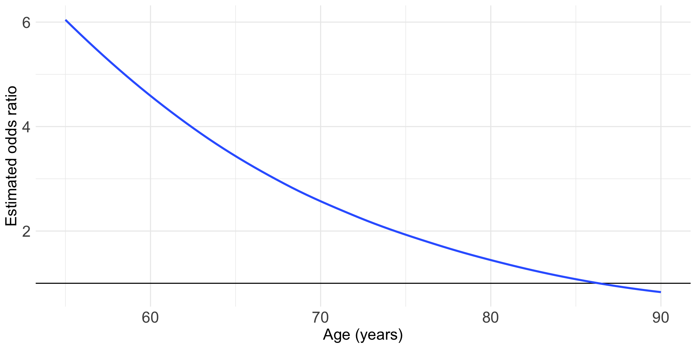
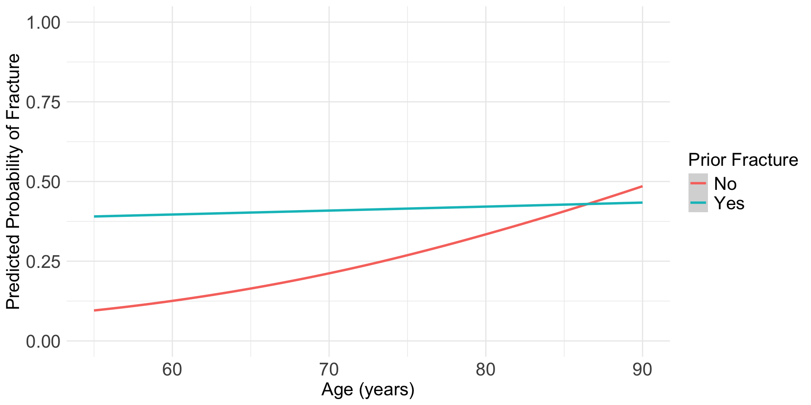
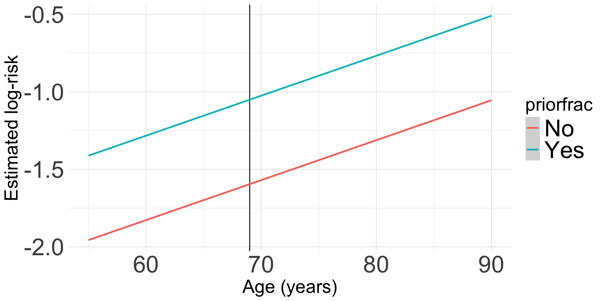
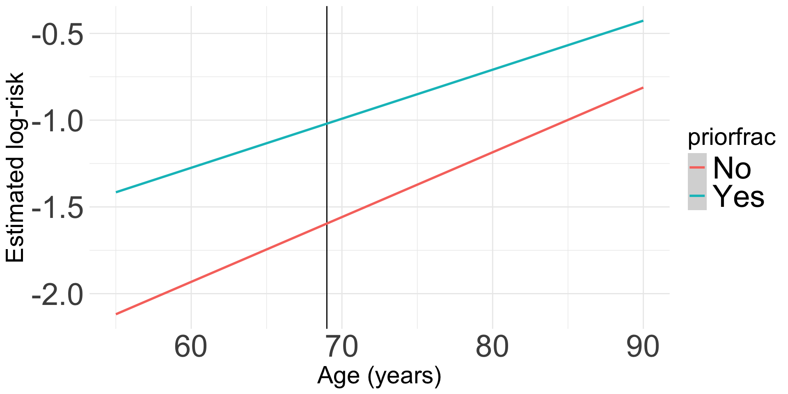
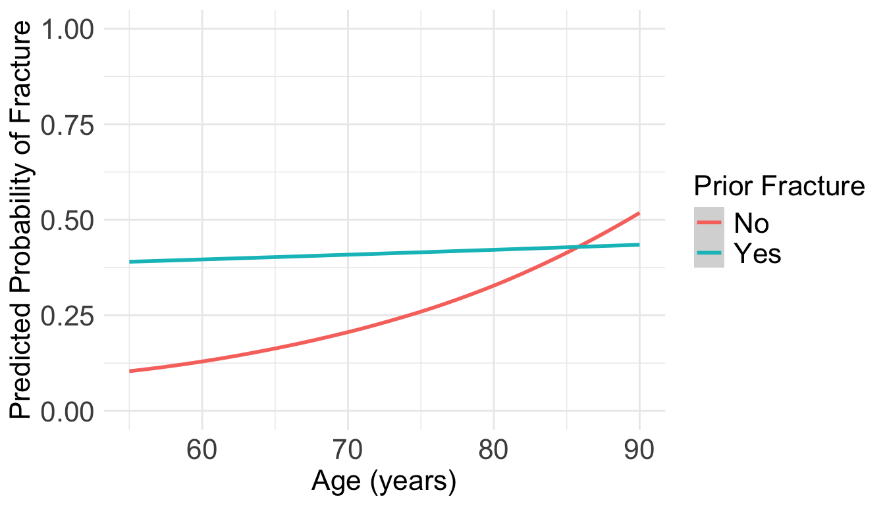

2025-05-28
\[ \log(\mu) = \beta_0 + \beta_1 X\]
Outcome variable: any fracture in the first year of follow up (FRACTURE: 0 or 1)
Risk factor/variable of interest: history of prior fracture (PRIORFRAC: 0 or 1)
Potential confounder or effect modifier: age (AGE, a continuous variable)
For individuals 69 years old, the estimated odds of a new fracture for individuals with prior fracture is 2.72 times the estimated odds of a new fracture for individuals with no prior fracture (95% CI: 1.70, 4.35). As seen in Figure 1 (a), the odds ratio of a new fracture when comparing prior fracture status decreases with age, indicating that the effect of prior fractures on new fractures decreases as individuals get older. In Figure 1 (b), it is evident that for both prior fracture statuses, the predict probability of a new fracture increases as age increases. However, the predicted probability of new fracture for those without a prior fracture increases at a higher rate than that of individuals with a prior fracture. Thus, the predicted probabilities of a new fracture converge at age [insert age here].


\[\text{log}\left(\widehat\pi(\mathbf{X})\right) = \widehat\beta_0 + \widehat\beta_1 \cdot I(\text{PF}= \text{``Yes"}) + \widehat\beta_2 \cdot Age + \widehat\beta_3 \cdot I(\text{PF} = \text{``Yes"}) \cdot Age \]
glm function?| term | estimate | std.error | statistic | p.value | conf.low | conf.high |
|---|---|---|---|---|---|---|
| (Intercept) | −1.625 | 0.106 | −15.269 | 0.000 | −1.846 | −1.427 |
| priorfracYes | 0.727 | 0.159 | 4.570 | 0.000 | 0.404 | 1.034 |
| age_c | 0.046 | 0.011 | 4.217 | 0.000 | 0.025 | 0.066 |
| priorfracYes:age_c | −0.043 | 0.016 | −2.710 | 0.007 | −0.074 | −0.012 |
\[\text{log}\left(\widehat\pi(\mathbf{X})\right) = \widehat\beta_0 + \widehat\beta_1 \cdot I(\text{PF}= \text{``Yes"}) + \widehat\beta_2 \cdot Age \]
glm(): works!
glm(): does not work!Error: no valid set of coefficients has been found: please supply starting values
logbin()
glm uses an iteratively reweighted least squares algorithmlogbin instead of glm will often fix the issue with fitting
| term | estimate | std.error | statistic | p.value | conf.low | conf.high |
|---|---|---|---|---|---|---|
| (Intercept) | −1.595 | 0.103 | −15.428 | 0.000 | −1.798 | −1.393 |
| priorfracYes | 0.545 | 0.159 | 3.416 | 0.001 | 0.232 | 0.857 |
| age_c | 0.026 | 0.008 | 3.104 | 0.002 | 0.009 | 0.042 |
\[\text{log}\left(\widehat\pi(\mathbf{X})\right) = \widehat\beta_0 + \widehat\beta_1 \cdot I(\text{PF}= \text{``Yes"}) + \widehat\beta_2 \cdot Age\]
\(\exp(\beta_0)\): The risk of fracture (outcome event) for someone who had no prior fracture and is the mean age of 69 years old
\(\exp(\beta_1)\): The risk of fracture for someone who had a prior fracture is \(\exp(\beta_1)\) times the risk of fracture for someone who did not have a prior fracture, adjusting for age.
\(\exp(\beta_2)\): For every one year increase in age, the risk of fracture is \(\exp(\beta_2)\) times, adjusting for prior fracture.
*Recall that once I estimate the coefficients, my interpretations need to reflect that they are estimated by saying “estimated risk”
logbin):tidy(glow_main, conf.int = T, exponentiate = T) %>%
gt() %>%
tab_options(table.font.size = 35) %>%
fmt_number(decimals = 3)| term | estimate | std.error | statistic | p.value | conf.low | conf.high |
|---|---|---|---|---|---|---|
| (Intercept) | 0.203 | 0.103 | −15.428 | 0.000 | 0.166 | 0.248 |
| priorfracYes | 1.724 | 0.159 | 3.416 | 0.001 | 1.261 | 2.356 |
| age_c | 1.026 | 0.008 | 3.104 | 0.002 | 1.010 | 1.043 |
| term | estimate | std.error | statistic | p.value | conf.low | conf.high |
|---|---|---|---|---|---|---|
| (Intercept) | 0.203 | 0.103 | −15.428 | 0.000 | 0.166 | 0.248 |
| priorfracYes | 1.724 | 0.159 | 3.416 | 0.001 | 1.261 | 2.356 |
| age_c | 1.026 | 0.008 | 3.104 | 0.002 | 1.010 | 1.043 |
\(\exp(\widehat{\beta}_0)\): The estimated risk of fracture is 0.2 for someone who had no prior fracture and is the mean age of 69 years old
\(\exp(\widehat{\beta}_1)\): The estimated risk of fracture for someone who had a prior fracture is 1.72 times the estimated risk of fracture for someone who did not have a prior fracture, adjusting for age.
\(\exp(\widehat{\beta}_2)\): For every one year increase in age, the estimated risk of fracture is 1.03 times, adjusting for prior fracture.
prior_age = expand_grid(priorfrac = c("No", "Yes"), age_c = (55:90)-69)
frac_pred_lb = predict(glow_main, prior_age, se.fit = F, type="link")
pred_glow_lb = prior_age %>% mutate(frac_pred = frac_pred_lb,
age = age_c + mean_age)
ggplot(pred_glow_lb) +
geom_vline(xintercept = 69) +
geom_smooth(method = "loess", aes(x = age, y = frac_pred, color = priorfrac)) +
theme(text = element_text(size=35), title = element_text(size=22)) +
labs(x = "Age (years)", y = "Estimated log-risk")
\[\text{log}\left(\widehat\pi(\mathbf{X})\right) = \widehat\beta_0 + \widehat\beta_1 \cdot I(\text{PF}= \text{``Yes"}) + \widehat\beta_2 \cdot Age + \widehat\beta_3 \cdot I(\text{PF}= \text{``Yes"}) \cdot Age\]
glow3 = glow %>%
mutate(interaction_PF_age = as.numeric(priorfrac)*age_c)
glow2_log_binom = logbin(formula = fracture ~ priorfrac + age_c + interaction_PF_age,
data = glow3)
tidy(glow2_log_binom, conf.int = T) %>%
gt() %>%
tab_options(table.font.size = 30) %>%
fmt_number(decimals = 3)| term | estimate | std.error | statistic | p.value | conf.low | conf.high |
|---|---|---|---|---|---|---|
| (Intercept) | −1.596 | 0.104 | −15.414 | 0.000 | −1.799 | −1.393 |
| priorfracYes | 0.576 | 0.170 | 3.382 | 0.001 | 0.242 | 0.910 |
| age_c | 0.037 | 0.026 | 1.440 | 0.150 | −0.013 | 0.088 |
| interaction_PF_age | −0.009 | 0.017 | −0.546 | 0.585 | −0.042 | 0.023 |
| term | estimate | std.error | statistic | p.value |
|---|---|---|---|---|
| (Intercept) | −1.596 | 0.104 | −15.414 | 0.000 |
| priorfracYes | 0.576 | 0.170 | 3.382 | 0.001 |
| age_c | 0.037 | 0.026 | 1.440 | 0.150 |
| interaction_PF_age | −0.009 | 0.017 | −0.546 | 0.585 |
prior_age = expand_grid(priorfrac = c("No", "Yes"), age_c = (55:90)-69) %>%
mutate(interaction_PF_age = ifelse(priorfrac=="Yes", 1, 0)*age_c)
frac_pred_lb = predict(glow2_log_binom, prior_age, se.fit = F, type="link")
pred_glow_lb = prior_age %>% mutate(frac_pred = frac_pred_lb,
age = age_c + mean_age)
ggplot(pred_glow_lb) +
geom_vline(xintercept = 69) +
geom_smooth(method = "loess", aes(x = age, y = frac_pred, color = priorfrac)) +
theme(text = element_text(size=35), title = element_text(size=22)) +
labs(x = "Age (years)", y = "Estimated log-risk")
prior_age = expand_grid(priorfrac = c("No", "Yes"), age_c = (55:90)-69)
frac_pred_lb = predict(glow_log_binom, prior_age, se.fit = T, type="response")
pred_glow_lb = prior_age %>% mutate(frac_pred = frac_pred_lb$fit,
age = age_c + mean_age)
ggplot(pred_glow_lb) + #geom_point(aes(x = age, y = frac_pred, color = priorfrac)) +
geom_smooth(method = "loess", aes(x = age, y = frac_pred, color = priorfrac)) +
theme(text = element_text(size=20), title = element_text(size=16)) + ylim(0,1) +
labs(color = "Prior Fracture", x = "Age (years)", y = "Predicted Probability of Fracture")
Lesson 16: Log-binomial Regression